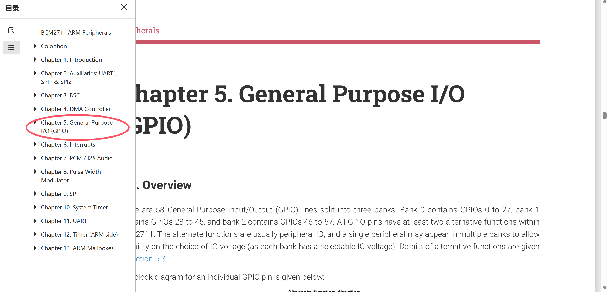
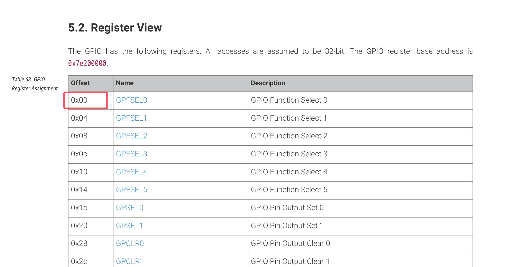

使用寄存器对GPIO进行操作
树莓派GPIO寄存器相关
首先我们要了解对GPIO操作的相关寄存器，树莓派4B使用的芯片是bcm2711，通过树莓派官网下载芯片手册。
通过查看芯片手册
了解到有如下几个寄存器
- GPFSELx：选择gpio的功能。例如FSEL9就是GPIO9，我们还可以看到通过设置某几位为000输入，001输出。

- GPSETx ：将gpio置1
- GPCLRx ：将GPIO清0
下面我们来使用这些寄存器，首先是GPFSELx:如果我们要将GPIO3设置成输出，根据手册上的描述只需要将寄存器GPSEL0的【11:9】位设置为 001 即可。通过查看开始寄存器偏移地址可知GPFSEL0的地址为 0x7e200000+0x00 
1 | //val 0xfe200000 |
设置输出的电平就更简单了，根据手册：
- 输出高电平，寄存器GPSET0 的第n位置1，GPIOn就输出高电平。（n范围0~31）
- 输出低电平，寄存器GPSET0 的第n位置1，GPIOn就输出低电平。（n范围0~31）其他手册上更详细。
Linux对寄存器操控
实际上Linux是不能对寄存器直接操作的，下面是我所理解到的：
Linux对寄存器操作，首先需要将那段物理地址映射进来（映射成虚拟地址~~~应该是~~~），然后你对那段逻辑地址进行操作–就像上面的位操作。操作完后需要通过一个函数将你的操作变成对寄存器操作。
我觉得我说的好抽象，能力太差，请见谅。下面我给一个简单的例子进行说明：
1 | // 将GPIO3设置成输出高电平 |
控制任意gpio输出高低电平以及读取任意GPIO
驱动层代码如下
1 |
|
应用层代码
1 |
|
使用Linux内核提供的GPIO相关API
GPIO相关API介绍
旧的方法：sysfs 接口。在 Linux 版本 4.7 之前，在用户空间中管理 GPIO 行的接口始终通过导出在 /sys/class/gpio 中的文件在 sysfs 中。在写GPIO驱动的时候，大多数使用的是以gpio
开头的函数，例如gpio_request_one, Linux 版本 4.8 开始，GPIO驱动应该使用gpiod_xxx类函数。
获取gpio。可以使用
gpiod_get()来获取一个gpio，如果要获取多个gpio，请使用gpiod_get_index。
struct gpio_desc *gpiod_get(struct device *dev, const char *con_id,enum gpiod_flags flags)
struct gpio_desc *gpiod_get_index(struct device *dev,const char *con_id, unsigned int idx,enum gpiod_flags flags)gpiod_get参数解释：struct device *dev表示当前将要控制GPIO的设备。const char *con_id是根据GPIO映射在设备树节点的定义，其中名为<funtion>-gpio的属性，<funtion>就是con_id需要的，详细解释见 官方文档 。enum gpiod_flags flagsflags 参数用于指定 GPIO 的方向和初始值,它可以是以下取值：- GPIOD_ASIS 或 0 表示根本不初始化 GPIO。必须稍后使用其中一个专用函数设置方向。
- GPIOD_IN 将 GPIO 初始化为输入。
- GPIOD_OUT_LOW 将 GPIO 初始化为输出，值为 0。
- GPIOD_OUT_HIGH 将 GPIO 初始化为输出，值为 1。
- GPIOD_OUT_LOW_OPEN_DRAIN 与 GPIOD_OUT_LOW 相同，但也强制线路在电气上采用开漏使用。
- GPIOD_OUT_HIGH_OPEN_DRAIN 与 GPIOD_OUT_HIGH 相同，但也强制线路在电气上采用开漏使用。
gpiod_get使用举例：
1
2
3
4
5
6
7
8
9
10
11
12
13
14
15
16
17
18
19
20
21
22//--------------设备树有一个gpio节点如下----------------
mled{
compatible = "mled";
mled-gpios = <&gpio 3 GPIO_ACTIVE_HIGH>;
};
//-------通过gpiod_get()获取gpio---------
// platform_driver 的probe
static int my_probe(struct platform_device *pdev)
{
printk(KERN_INFO "%s : enter\n", __func__);
// 获取GPIO对应的Linux虚拟内存地址
//con_id 就是 `-gpios` 或者 `-gpio` 前面的字符串。
gpio_out = gpiod_get(&pdev->dev,"mled",GPIOD_OUT_HIGH);
if(IS_ERR(gpio_out))
{
printk(KERN_ERR "cannot get gpio_out\n");
return -1;
}
//设置gpio输出高电平
gpiod_set_value(gpio_out,1);
return 0;
}
gpiod_get_index使用方法与gpiod_get()类似，但是需要指定索引，详细见 此处 。
其余函数官方文档有很清楚的 说明 。
树莓派实操
设备树添加节点
根据上面我们知道，在编写驱动对gpio进行操作涉及到设备树，需要我们在设备树上添加自己的节点。
添加节点一般有两种方法
- 一种是直接在设备树相关文件上添加，对于树莓派4B而言就是修改文件 bcm2711-rpi-4-b.dts
- 另外一种是通过 设备树叠加（Device Tree Overlay，简称DT Overlay）是一种在基本设备树（Base Device Tree）的基础上动态添加、修改或删除硬件节点的方法。可以参考 这篇文章，不过我没有成功。
我这里使用的是第一种方法
- 首先我们到内核源码文件下找到设备树文件位置
 ,注意如果你和我版本不一样可能位置也不同，比如 这篇文章
,注意如果你和我版本不一样可能位置也不同，比如 这篇文章
的设备树文件是在内核下的arch/arm/boot/dts/。 - 打开设备树文件 bcm2711-rpi-4-b.dts，找到根节点
 ，在它结束
，在它结束 }的上面添加你gpio的控制节点 ，保存好后回到内核根目录下。
，保存好后回到内核根目录下。 - 编译设备树文件，在内核根目录下执行
sudo make dtbs（如果你是交叉编译记得加上交叉编译的工具）。如果正常的话会生成新文件 。
。 - 覆盖当前设备树。将刚才生成的文件覆盖当前设备树。注意覆盖位置好像也不一样，我覆盖的位置是
/boot/firmware/,你覆盖之前最好保存备份。sudo cp arch/arm64/boot/dts/broadcom/bcm2711-rpi-4-b.dtb /boot/firmware/bcm2711-rpi-4-b.dtbsudo cp arch/arm64/boot/dts/broadcom/bcm2711-rpi-400.dtb /boot/firmware/bcm2711-rpi-400.dtb
覆盖完后重启树莓派，如何查看设备树ls /proc/device-tree/. 如果编辑设备树时添加的名字，那么就成功一半了；没有就可能是设备树文件位置找错了，或者覆盖的时候覆盖错文件了。
如果编辑设备树时添加的名字，那么就成功一半了；没有就可能是设备树文件位置找错了，或者覆盖的时候覆盖错文件了。
驱动编写
我直接给代码了，大概思路就是通过 platform 总线，将设备树节点和驱动程序匹配起来，达到操作gpio的目的。
1 |
|
效果就是你 insmod 模块的时候gpio3会给高电平，rmmod 模块的时候gpio3会给低电平。
待写
篇幅有点太长了，就放到下一篇吧—按键控制led&如何进行消抖